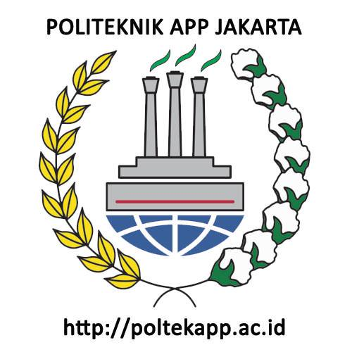

library("tidyverse")
library("readxl")
library("writexl")
library("dplyr")Pengaruh Pertumbuhan Ekonomi terhadap Tingkat Pengangguran Terbuka dan Partisipasi Angkatan Kerja di Indonesia tahun 2020
Metode Penelitian Politeknik APP Jakarta

1 Pendahuluan
1.1 Latar belakang
Pertumbuhan ekonomi merupakan salah satu indikator utama yang mencerminkan keberhasilan pembangunan suatu negara. Namun, hubungan antara pertumbuhan ekonomi dan tingkat pengangguran serta partisipasi angkatan kerja tidak selalu linear. Penelitian ini bertujuan untuk menganalisis pengaruh pertumbuhan ekonomi terhadap tingkat pengangguran terbuka (TPT) dan partisipasi angkatan kerja (TPAK) di Indonesia pada tahun 2020
Metode identifikasi masalah ini menggunakan metode fishbone diagram untuk mengidentifikasi permasalahan topik ini. Berikut tabel fishbone topik ini
1.2 Ruang lingkup
Ruang lingkup pembahasan mencakup data pertumbuhan ekonomi regional, tingkat pengangguran terbuka (TPT), dan partisipasi angkatan kerja (TPAK) pada tahun 2020. Analisis dilakukan dengan fokus pada hubungan antara variabel-variabel tersebut. Batasan masalah ini berperan membantu dalam mengidentifikasi masalah yang akan dibahas dan membatasi jangkauan proses yang dibahas.
1.3 Rumusan masalah
1. Apakah pertumbuhan ekonomi berpengaruh terhadap tingkat pengangguran terbuka?
2. Bagaimana pengaruh pertumbuhan ekonomi terhadap partisipasi angkatan kerja?
1.4 Tujuan dan manfaat penelitian
Tujuan penelitian ini adalah untuk menganalisis pengaruh pertumbuhan ekonomi terhadap tingkat pengangguran terbuka dan partisipasi angkatan kerja di Indonesia pada tahun 2020.
Manfaat penelitian ini adalah memberikan informasi kepada pembuat kebijakan tentang hubungan antara pertumbuhan ekonomi dan indikator tenaga kerja untuk mendukung pengambilan keputusan yang lebih baik.
1.5 Package
Ini tidak wajib ada di packages yang digunakan antara lain sebagai berikut:
2 Studi pustaka
Menurut teori Okun (1962), terdapat hubungan negatif antara pertumbuhan ekonomi dan tingkat pengangguran, yang menunjukkan bahwa peningkatan dalam pertumbuhan ekonomi cenderung menurunkan tingkat pengangguran. Teori ini menjelaskan bahwa ketika ekonomi suatu negara mengalami pertumbuhan yang signifikan, aktivitas ekonomi akan meningkat, sehingga lebih banyak lapangan kerja yang tercipta. Peningkatan lapangan kerja ini tidak hanya mengurangi jumlah pengangguran tetapi juga dapat meningkatkan tingkat partisipasi angkatan kerja karena lebih banyak individu termotivasi untuk mencari pekerjaan. Namun, hubungan ini tidak selalu berjalan secara linear, karena faktor-faktor lain seperti kualitas tenaga kerja, efisiensi pasar tenaga kerja, dan kebijakan pemerintah juga berperan dalam menentukan seberapa besar dampak pertumbuhan ekonomi terhadap pengangguran. Selain itu, struktur ekonomi suatu negara, seperti dominasi sektor formal atau informal, juga dapat memengaruhi hubungan ini (Okun, 1962).
Selanjutnya, Blanchard dan Fischer (1989) menekankan bahwa dinamika hubungan antara pertumbuhan ekonomi dan pengangguran juga bergantung pada faktor-faktor makroekonomi seperti stabilitas inflasi, investasi, dan kebijakan fiskal. Mereka mengungkapkan bahwa pertumbuhan ekonomi yang tidak stabil atau bersifat sementara sering kali memiliki dampak yang lemah terhadap pengurangan pengangguran. Oleh karena itu, penting untuk mempertimbangkan konteks ekonomi yang lebih luas dalam menganalisis hubungan ini.
3 Metode penelitian
3.1 Data
Data yang saya gunakan berupa pertumbuhan PDRB tiap provinsi dan tingkat pengangguran terbuka di Indonesia selama 2020
| Provinsi | Pertumbuhan PDB Regional 2020 (Triliun) | TPT 2020 |
|---|---|---|
| Aceh | 44,19 | 5,995 |
| Sumatera Utara | 231,59 | 5,81 |
| Sumatera Barat | -81,11 | 6,065 |
| Riau | -652,96 | 5,62 |
| Jambi | -236,91 | 4,695 |
| Sumatera Selatan | 24,09 | 4,705 |
| Bengkulu | 24,14 | 3,575 |
| Lampung | -73,03 | 4,465 |
| Kepulauan Bangka B | -5,50 | 4,3 |
| Kepulauan Riau | -967,25 | 8,16 |
| DKI Jakarta | -820,93 | 8,05 |
| Jawa Barat | -274,75 | 9,085 |
| Jawa Tengah | -58,59 | 5,34 |
| DI Yogyakarta | -914,82 | 3,975 |
| Jawa Timur | -708,52 | 4,72 |
| Banten | -554,17 | 9,315 |
| Bali | 22,27 | 3,44 |
| Nusa Tenggara Barat | -4,99 | 3,63 |
| Nusa Tenggara Timur | 36,00 | 3,46 |
| Kalimantan Barat | 42,83 | 5,14 |
| Kalimantan Tengah | -27,91 | 3,955 |
| Kalimantan Selatan | -894,72 | 4,205 |
| Kalimantan Timur | 78,27 | 6,795 |
| Kalimantan Utara | 42,07 | 5,34 |
| Sulawesi Utara | 234,01 | 6,355 |
| Sulawesi Tengah | -5,36 | 3,35 |
| Sulawesi Selatan | 17,64 | 6,005 |
| Sulawesi Tenggara | 11,69 | 3,84 |
| Gorontalo | 2,00 | 3,785 |
| Sulawesi Barat | 2,21 | 2,855 |
| Maluku | 52,07 | 7,14 |
| Maluku Utara | -15,37 | 4,62 |
| Papua Barat | 193,52 | 6,79 |
| Papua | 223,13 | 3,85 |
| Provinsi | Pertumbuhan PDB Regional 2020 (Triliun) | TPAK 2020 |
|---|---|---|
| Aceh | 44,19 | 65,71 |
| Sumatera Utara | 231,59 | 70,42 |
| Sumatera Barat | -81,11 | 70,88 |
| Riau | -652,96 | 66,115 |
| Jambi | -236,91 | 67,535 |
| Sumatera Selatan | 24,09 | 69,29 |
| Bengkulu | 24,14 | 72,835 |
| Lampung | -73,03 | 70,875 |
| Kepulauan Bangka B | -5,50 | 68,1 |
| Kepulauan Riau | -967,25 | 66,755 |
| DKI Jakarta | -820,93 | 65,39 |
| Jawa Barat | -274,75 | 65,21 |
| Jawa Tengah | -58,59 | 69,94 |
| DI Yogyakarta | -914,82 | 70,955 |
| Jawa Timur | -708,52 | 70,845 |
| Banten | -554,17 | 64,175 |
| Bali | 22,27 | 75,675 |
| Nusa Tenggara Barat | -4,99 | 69,995 |
| Nusa Tenggara Timur | 36,00 | 73,51 |
| Kalimantan Barat | 42,83 | 69,645 |
| Kalimantan Tengah | -27,91 | 69,645 |
| Kalimantan Selatan | -894,72 | 70,91 |
| Kalimantan Timur | 78,27 | 68,645 |
| Kalimantan Utara | 42,07 | 67,305 |
| Sulawesi Utara | 234,01 | 63,955 |
| Sulawesi Tengah | -5,36 | 70,36 |
| Sulawesi Selatan | 17,64 | 64,4 |
| Sulawesi Tenggara | 11,69 | 70,535 |
| Gorontalo | 2,00 | 66,93 |
| Sulawesi Barat | 2,21 | 70,28 |
| Maluku | 52,07 | 63,46 |
| Maluku Utara | -15,37 | 64,35 |
| Papua Barat | 193,52 | 69,33 |
| Papua | 223,13 | 73,585 |
Penelitian ini menggunakan data PDRB Provinsi 2020, Tingkat Pengangguran Terbuka, dan Tingkat Partisipasi Tenaga kerja 2020 dari Badan Pusat Statistik(BPS)
Baca data hubungan antara Pertumbuhan PDRB dan Tingkat Pengangguran Terbuka 2020
#import dataset
library(readxl)
dat<-read_excel('TPT2020.xlsx')
head(dat)# A tibble: 6 × 3
Provinsi pdrb tpt
<chr> <dbl> <dbl>
1 Aceh 44.2 6.00
2 Sumatera Utara 232. 5.81
3 Sumatera Barat -81.1 6.06
4 Riau -653. 5.62
5 Jambi -237. 4.70
6 Sumatera Selatan 24.1 4.70library("ggplot2")
library("readxl")
library("dplyr")
ggplot(data=dat,aes(x=pdrb,y=tpt)) +
geom_point(color="blue",size=2) + # setiap nambah command, selalu kasih tanda +
labs(title="tabel 1. hubungan antara Pertumbuhan PDRB dan TPT 2020",
x="Pertumbuhan PDRB Provinsi 2020",
y="TPT 2020",
caption = "sumber: Badan Pusat Statistik") +
theme_classic()Baca data hubungan antara Pertumbuhan PDRB dan Tingkat Pengangguran Terbuka 2020
#import dataset
library(readxl)
dat<-read_excel('TPAK2020.xlsx')
head(dat)# A tibble: 6 × 3
Provinsi pdrb tpak
<chr> <dbl> <dbl>
1 Aceh 44.2 65.7
2 Sumatera Utara 232. 70.4
3 Sumatera Barat -81.1 70.9
4 Riau -653. 66.1
5 Jambi -237. 67.5
6 Sumatera Selatan 24.1 69.3library("ggplot2")
library("readxl")
library("dplyr")
ggplot(data=dat,aes(x=pdrb,y=tpak)) +
geom_point(color="red",size=2) + # setiap nambah command, selalu kasih tanda +
labs(title="tabel 1. hubungan antara Pertumbuhan PDRB dan TPAK 2020",
x="Pertumbuhan PDRB Provinsi 2020",
y="TPAK 2020",
caption = "sumber: Badan Pusat Statistik") +
theme_classic()3.2 Metode analisis
Metode yang dipilih adalah regresi univariat atau Ordinary Least Square (OLS) dengan 1 variabel independen. Penelitian ini merbaksud mencari hubungan antara PERTUMBUHAN PDRB 2020 (PDRB) dan TINGKAT PENGANGGURAN TERBUKA (TPT) serta TINGKAT PARTISIPASI ANGKATAN KERJA (TPAK). Spesifikasi yang dilakukan adalah:
MODEL EKONOMETRIKA 1:
\[ y_{t}=\beta_0 + \beta_1 x_t+\mu_t \] di mana \(y_1\) adalah TPT dan \(x_1\) adalah PDRB.
MODEL EKONOMETRIKA 2:
\[ y_{t}=\beta_0 + \beta_1 x_t+\mu_t \] di mana \(y_2\) adalah TPAK dan \(x_2\) adalah PDRB.
4 Pembahasan
4.1 Pembahasan masalah Regresi PDRB dan TPT
Dikarenakan saya menggunakan OLS, Pembahasan saya disini hanya menghubungkan PDRB 2020 (PDRB) dan TINGKAT PENGANGGURAN TERBUKA (TPT), Data tersebut saya satukan untuk saya regresi dan tampilannya seperti ini.
#import dataset
library(readxl)
dat<-read_excel('TPT2020.xlsx')
head(dat)# A tibble: 6 × 3
Provinsi pdrb tpt
<chr> <dbl> <dbl>
1 Aceh 44.2 6.00
2 Sumatera Utara 232. 5.81
3 Sumatera Barat -81.1 6.06
4 Riau -653. 5.62
5 Jambi -237. 4.70
6 Sumatera Selatan 24.1 4.70Koreksi: TPT adalah Tingkat Pengangguran Terbuka 2020
4.2 Analisis masalah Regresi PDRB dan TPT
Hasil regresinya adalah
reg1<-lm(tpt~pdrb,data=dat)
summary(reg1)
Call:
lm(formula = tpt ~ pdrb, data = dat)
Residuals:
Min 1Q Median 3Q Max
-2.3110 -1.2804 -0.3805 1.0578 3.6649
Coefficients:
Estimate Std. Error t value Pr(>|t|)
(Intercept) 5.0483812 0.3061364 16.491 <2e-16 ***
pdrb -0.0013529 0.0008111 -1.668 0.105
---
Signif. codes: 0 '***' 0.001 '**' 0.01 '*' 0.05 '.' 0.1 ' ' 1
Residual standard error: 1.643 on 32 degrees of freedom
(1 observation deleted due to missingness)
Multiple R-squared: 0.07999, Adjusted R-squared: 0.05124
F-statistic: 2.782 on 1 and 32 DF, p-value: 0.10514.3 Pembahasan masalah Regresi PDRB dan TPAK
Selanjutnya pada regresi kedua saya juga menggunakan OLS, Pembahasan saya disini hanya menghubungkan PDRB 2020 (PDRB) dan TINGKAT PENGANGGURAN TERBUKA (TPT), Data tersebut saya satukan untuk saya regresi dan tampilannya seperti ini.
#import dataset
library(readxl)
dat<-read_excel('TPAK2020.xlsx')
head(dat)# A tibble: 6 × 3
Provinsi pdrb tpak
<chr> <dbl> <dbl>
1 Aceh 44.2 65.7
2 Sumatera Utara 232. 70.4
3 Sumatera Barat -81.1 70.9
4 Riau -653. 66.1
5 Jambi -237. 67.5
6 Sumatera Selatan 24.1 69.3Koreksi: TPAK adalah Tingkat Pengangguran Terbuka 2020
4.4 Analisis masalah Regresi PDRB dan TPAK
Hasil regresinya adalah
reg1<-lm(tpak~pdrb,data=dat)
summary(reg1)
Call:
lm(formula = tpak ~ pdrb, data = dat)
Residuals:
Min 1Q Median 3Q Max
-5.5251 -2.0323 0.5042 1.9266 6.7248
Coefficients:
Estimate Std. Error t value Pr(>|t|)
(Intercept) 68.924088 0.575777 119.706 <2e-16 ***
pdrb 0.001171 0.001525 0.768 0.448
---
Signif. codes: 0 '***' 0.001 '**' 0.01 '*' 0.05 '.' 0.1 ' ' 1
Residual standard error: 3.09 on 32 degrees of freedom
(1 observation deleted due to missingness)
Multiple R-squared: 0.01809, Adjusted R-squared: -0.0126
F-statistic: 0.5895 on 1 and 32 DF, p-value: 0.44825 Kesimpulan
- Hubungan antara pertumbuhan PDRB terhadap Tingkat Pengangguran Terbuka di Tiap Provinsi 2020
Berdasarkan hasil regresi, model menunjukkan bahwa terdapat hubungan negatif antara PDRB regional dengan Tingkat Pengangguran Terbuka (TPT) di provinsi-provinsi di Indonesia pada tahun 2020, yang ditunjukkan oleh koefisien PDRB sebesar -0,0013529. Artinya, setiap kenaikan sebesar 1 triliun rupiah dalam PDRB diprediksi akan menurunkan Tingkat Pengangguran Terbuka sebesar 0,0013 persen, ceteris paribus. Nilai adjusted R-squared sebesar 0,05124 menunjukkan bahwa sekitar 5,1% variasi dalam TPT yang dapat dijelaskan oleh PDRB.
- Hubungan antara pertumbuhan PDRB terhadap Tingkat Partisipasi Angkatan Kerja di Tiap Provinsi 2020
Hubungan antara pertumbuhan PDRB (pdrb) dan tingkat partisipasi angkatan kerja (tpak) tiap provinsi di Indonesia pada tahun 2020 menunjukkan bahwa setiap peningkatan satu unit dalam pertumbuhan PDRB berhubungan dengan peningkatan sekitar 0.00117 unit pada tingkat partisipasi angkatan kerja. Ini menunjukkan adanya hubungan positif antara kedua variabel tersebut, di mana semakin tinggi pertumbuhan ekonomi, semakin tinggi pula tingkat partisipasi angkatan kerja, ceteris paribus.
6 Saran
Untuk meningkatkan akurasi dari penelitian ini, lebih baiknya untuk menambahkan beberapa variabel yang mendukung variabel yang terkait.
7 Referensi
Badan Pusat Statistik. (2020). Seri 2010: PDRB triwulanan atas dasar harga konstan menurut lapangan usaha di provinsi seluruh Indonesia (miliar rupiah) - 2010-2024. Badan Pusat Statistik. Diakses pada 29 Desember 2024, dari https://www.bps.go.id/id/statistics-table/1/MjIwNiMx/-seri-2010–pdrb-triwulanan-atas-dasar-harga-konstan-menurut-lapangan-usaha-di-provinsi-seluruh-indonesia–miliar-rupiah—2010-2024.html
Badan Pusat Statistik. (2020). Tingkat pengangguran terbuka menurut provinsi (persen). Badan Pusat Statistik. Diakses pada 29 Desember 2024, dari https://www.bps.go.id/id/statistics-table/2/NTQzIzI=/tingkat-pengangguran-terbuka-menurut-provinsi–persen-.html
Blanchard, O., & Fischer, S. (1989). Lectures on macroeconomics. MIT Press. https://books.google.com/books?hl=en&lr=&id=j_zs7htz9moC&oi=fnd&pg=PA1&dq=Blanchard,+O.,+%26+Fischer,+S.+(1989).+Lectures+on+macroeconomics.+MIT+Press.&ots=3WY_-_OS-6&sig=QlLBoKYIFly6v6nDnPvh-dRkoFw
Okun, A. M. (1962). Potential GNP: Its measurement and significance. American Economic Review, 52(3), 3-14.